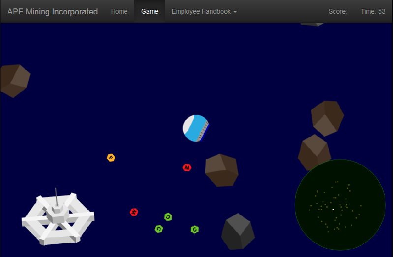

About Asteroid Prospector
By the year 2128, the population of the Earth and Moon has reached steady-state at 11 billion through population control and environmental policies. There are no mineral resources left to mine. All other resources are recycled or sustainable. The Martian Colony is growing, but the resources of the planet are already under pressure.
The APE Mining Corp, the largest mining conglomerate in the solar system, is now opening up a new frontier - in the asteroid belt. A young Martian, you have just joined their operation as a freelance mining operative. The job involves spending months at a time in space, is sometimes dangerous and the company is a secretive, inscrutable bureaucracy, but you need the work...
Asteroid Prospector is being developed as part of the 2014 NASA Space Apps Challenge.
This page will be undergoing frequent updates throughout the Space Apps Challenge, check back regularly to try out the latest version of the game!
Play the latest version here!
Current Progress
The screenshot below shows what the current version looks like. So far there are 3 types of asteroid you can destroy, each providing a different resource for you to collect, now with added space station! There is currently a time limit of 60 seconds per game.
